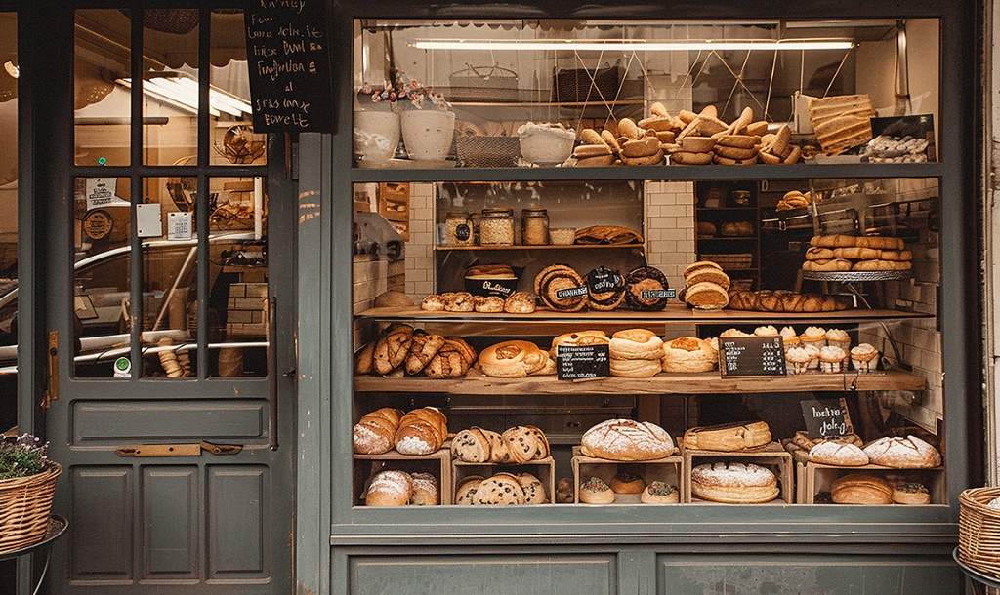
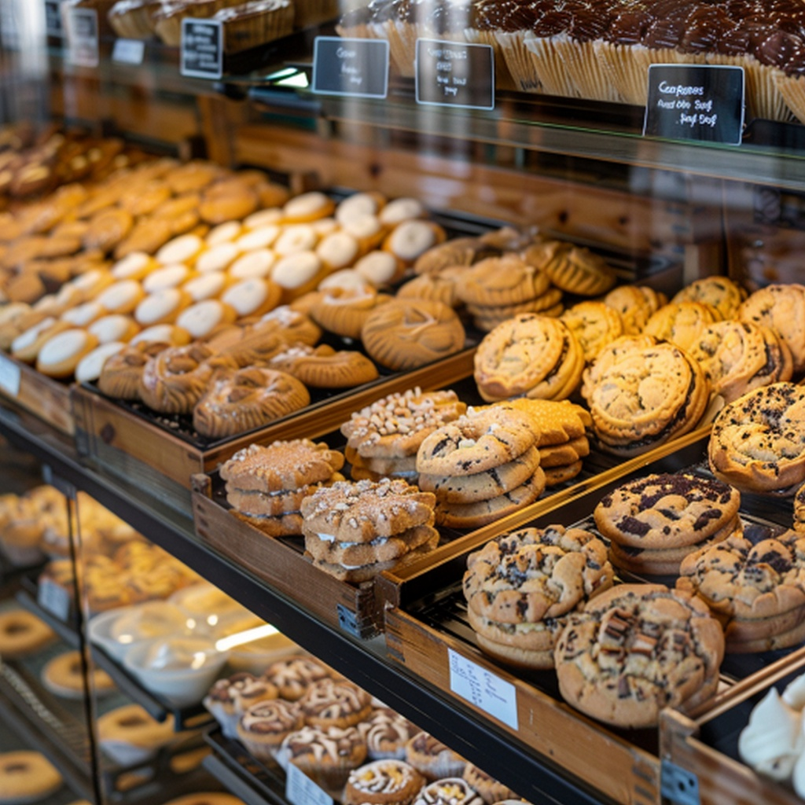

Welcome to North Star Bakery
Fresh from the Hearth Every Morning
Welcome to North Star Bakery, your friendly neighborhood destination for handcrafted artisan breads, wholesome breakfast pastries, and celebration cakes. Every morning starts long before sunrise as our bakers mix, shape, and bake small batches using time-honored slow fermentation techniques and organic flours. We believe great bread brings people together, and we are proud to serve our local community, daily commuters, and neighborhood families.
A Morning Welcome from Our Head Baker
Listen to a short welcome message about our baking craft and daily morning bake:
What We're Known For
Our bakery is recognized throughout the community for four core specialties:
- Naturally Leavened Sourdough: Fermented for up to 36 hours for exceptional depth of flavor and easy digestion.
- Locally Milled Heritage Grains: Sourced directly from regional organic millers to preserve essential nutrients and earthy aroma.
- Laminated Morning Pastries: Flaky, golden croissants and brioche twists made with cultured farm butter.
- Small-Batch Hospitality: Warm, friendly counter service and personalized pre-order reservations.

Featured Item of the Week: Artisan Sweet & Pastry Selection
Every week, our pastry team highlights a seasonal special alongside our customer favorites. This week, we are celebrating our gourmet cookie and sweet pastry collection:

Our featured cookie boxes and seasonal pastries are baked fresh every morning. View our full lineup on the Products page, or reserve yours today on our Pre-Orders page.
Hours and Location Snippet
Storefront Location: 104 North Star Way, Portland, ME 04101
Operating Hours: Tuesday – Sunday: 7:00 AM – 3:00 PM (Closed Mondays)
Quick Pre-Orders: Call (207) 555-0192 or submit an inquiry online.